Nyzo version 620 (commit on GitHub) adds TransactionIndexedSearchCommand to allow searching for transactions by account.
This version affects the client only.
The Test value was added to the RunMode enumeration. This will be used for all NyzoTest implementations to allow test-specific behavior.
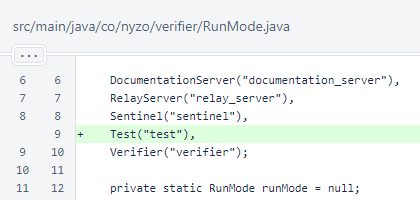In the client initialization process, the TransactionIndexer is now started.
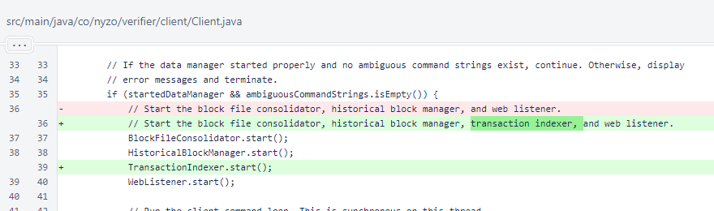ClientArgumentUtil has a new method for processing public identifier arguments.
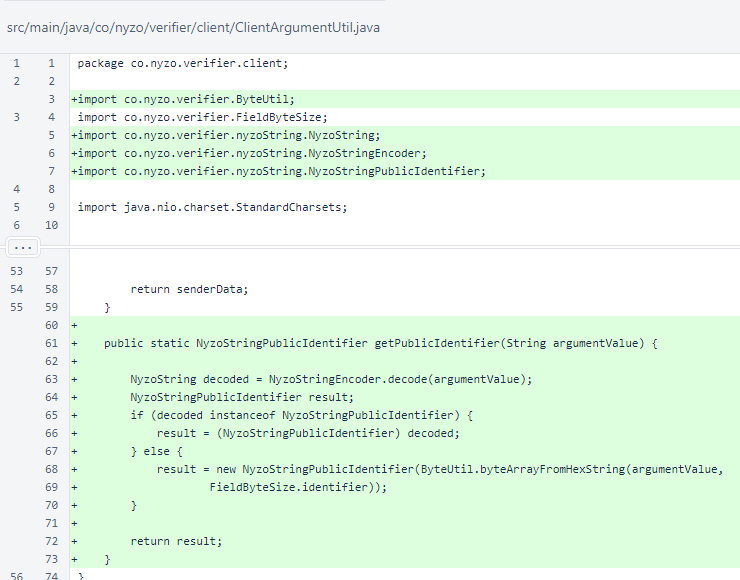The TransactionIndexedSearchCommand was added to the CommandManager.
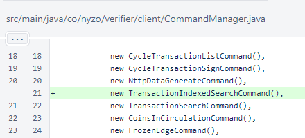In SimpleExecutionResult, the Byte type was mistakenly omitted from a serialization condition in the toJson() method. Instead of adding the Byte type to the condition, the Number type was added and all other types except Boolean were removed. Number is the abstract superclass of Byte, Double, Float, Integer, Long, and Short.
Before this correction, a Byte value would improperly serialize to an empty object in JSON.
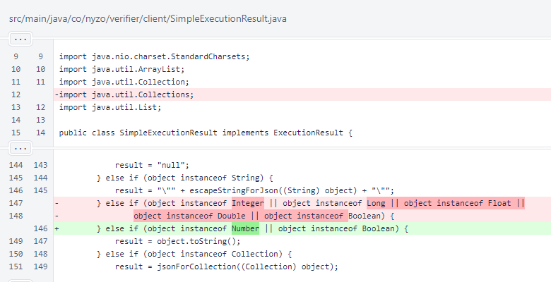TransactionIndexer now includes a value for tracking whether its thread is alive and the last height that was indexed.
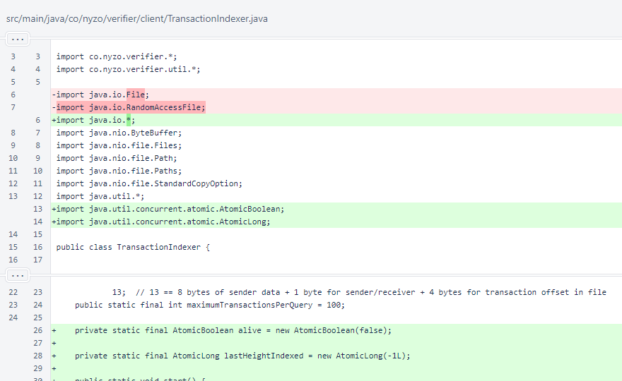The TransactionIndexer.start() method provides the background thread for transaction indexing. This background thread checks on a regular interval whether a new block is available to be indexed.
In future versions, indexing of older blocks will be necessary to fill transaction histories for accounts.
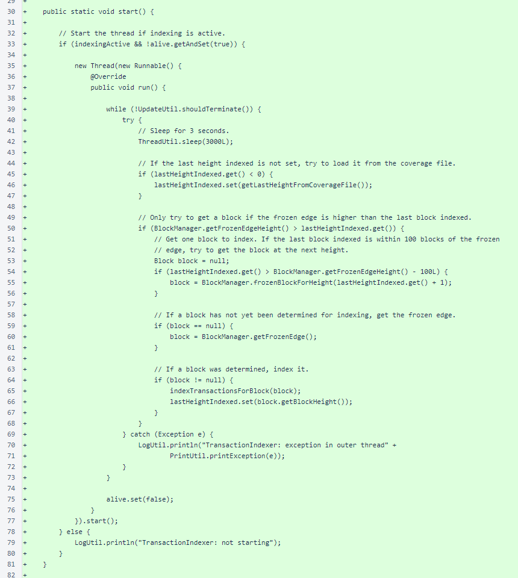At the end of TransactionIndexer.indexTransactionsForBlock(), the block height is now written to the block coverage file.
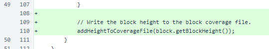In TransactionIndexer.transactionsForAccount(), safeClose is now used to close indexFileReader.
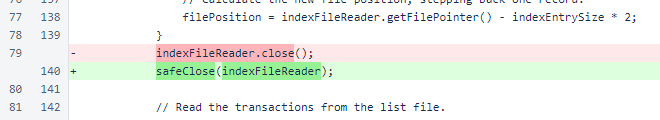The TransactionIndexer.addHeightToCoverageFile() method updates the accounting of which blocks have been indexed. The coverage file is a text file with either a single value or a range (two values separated by a hyphen) on each line. The values are written in ascending order, and all single values and ranges are merged as early as possible to ensure the file contains the minimum number of lines necessary to represent the set of heights that have been indexed.
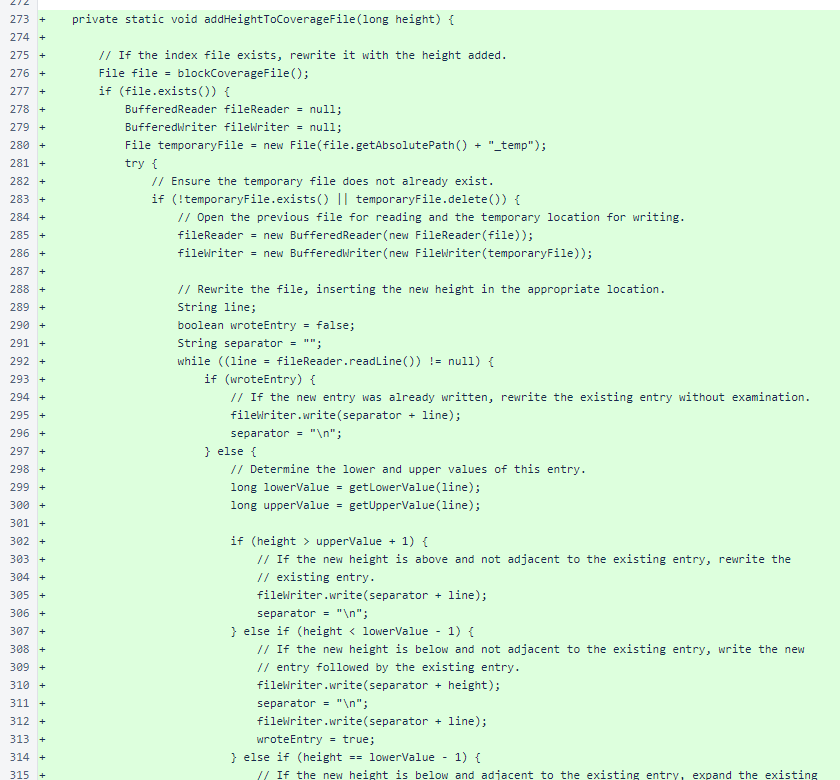The comments explain the different cases. When the test code for this class was written, care was taken to ensure that all conditions were tested at least once.
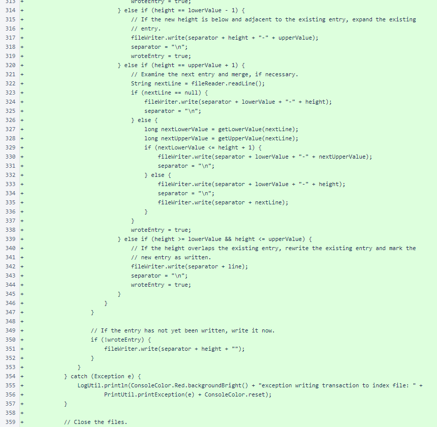The reader and writer are closed, and the temporary file is moved to the permanent location. This makes the addition of a height to the coverage file effectively atomic.
Another condition is provided for the initial write to this file.

The TransactionIndexer.getLowerValue() and TransactionIndexer.getUpperValue() methods provide the lower and upper values of a range from the block coverage file.
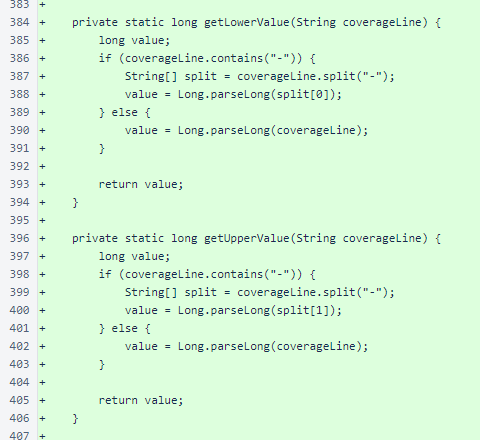The TransactionIndexer.listFileForAccount() and TransactionIndexer.indexFileForAccount() methods now append a test suffix to avoid interfering with production files if the test is run in a production environment.
The TransactionIndexer.blockCoverageFile() method standardizes the location of the block coverage file.
The TransactionIndexer.getTestSuffix() method returns "_test" for the Test run mode and the empty string for all other run modes.
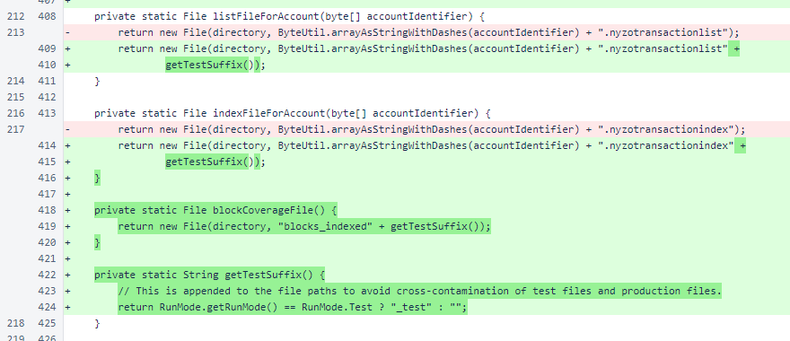The TransactionIndexer.safeClose() method now accepts any object implementing the Closeable interface. This supports RandomAccessFile as it did before, and it also supports the BufferedReader and BufferedWriter that are used for reading and writing text files.
The TransactionIndexer.getLastHeightFromCoverageFile() method provides the maximum height represented in a block coverage file.
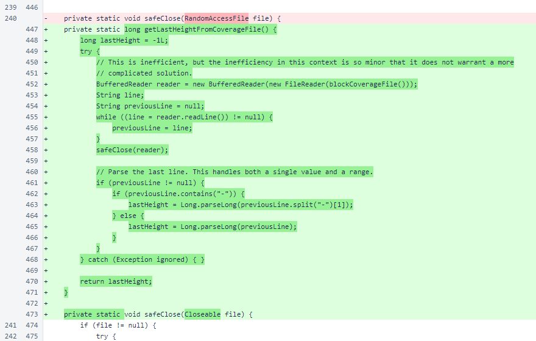The TransactionIndexedSearchCommand implements all methods required by the Command interface.
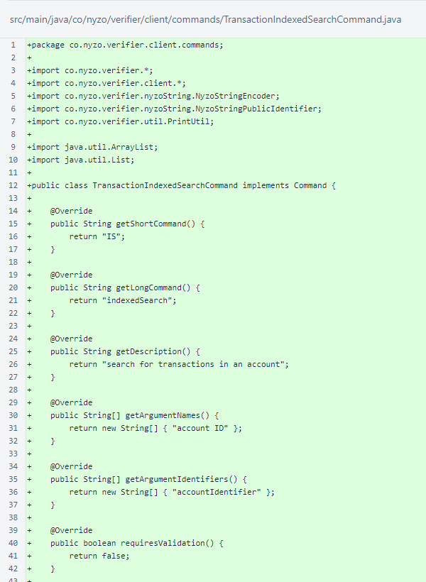The TransactionIndexedSearchCommand does not mutate any data, and it operates entirely on local data, so it does not require confirmation, it is not long-running, and it does not implement any validation logic.
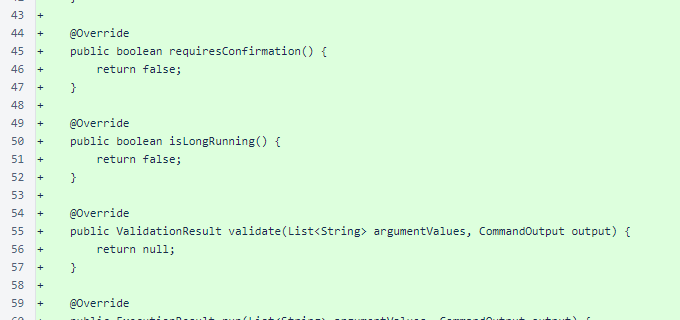The TransactionIndexedSearchCommand.run() method is a simple wrapper around the TransactionIndexer.transactionsForAccount() method. This method and command will need to support more parameters to be truly useful.
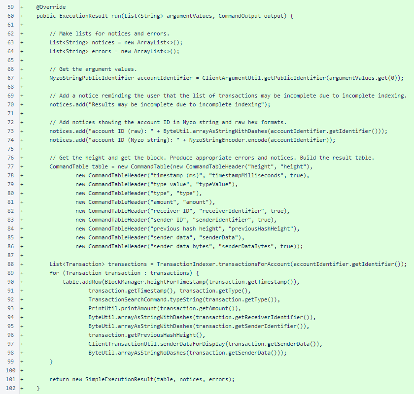The description of the existing TransactionSearchCommand has been changed to distinguish it from the new TransactionIndexedSearchCommand.
The TransactionSearchCommand.typeString() method has been exposed for reuse by the TransactionIndexedSearchCommand.
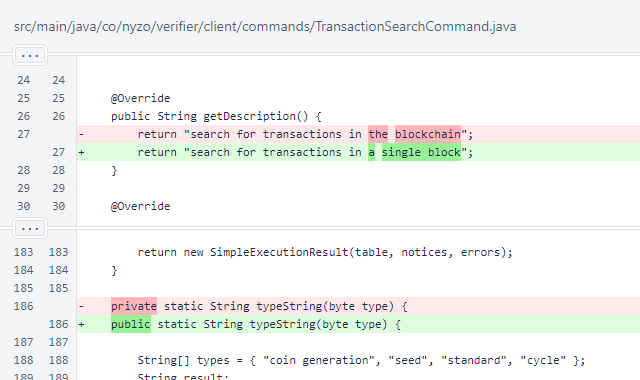In ClientArgumentUtilTest, the run mode is now set to Test. This value is not yet utilized by most tests, but it should now be set for all tests.
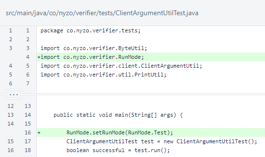In ClientNodeManagerTest, the run mode is now set to Test.
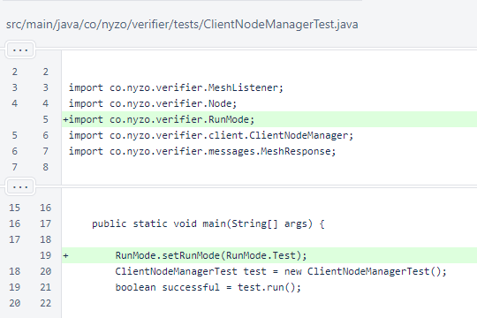In CommandManagerTest, the run mode is now set to Test.
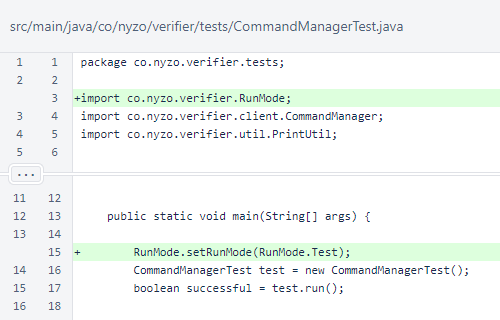In IpUtilTest, the run mode is now set to Test.
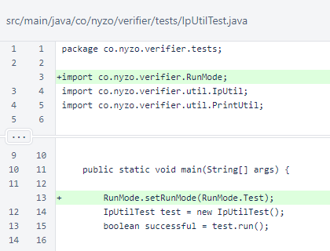In NyzoStringTest, the run mode is now set to Test. Also, the number of iterations in NyzoStringTest.testTransactionStrings() has been reduced from 100,000 to 10,000. The new number of iterations is consistent with the existing comment, and it noticeably reduces the run time of the test on many systems.
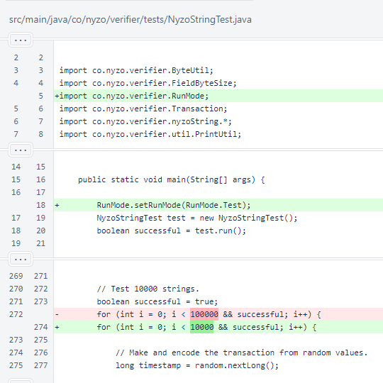In ShortLongTest, the run mode is now set to Test.
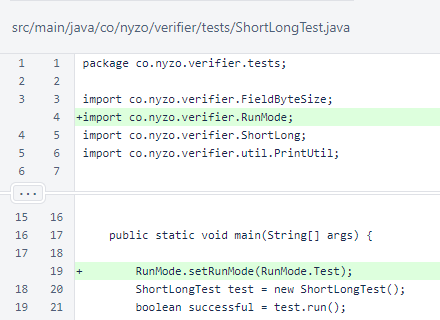In TestUtil, the run mode is now set to Test.
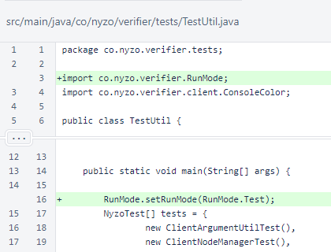In TransactionIndexerTest, the run mode is now set to Test. In TransactionIndexerTest.run(), some code was written to support the new block coverage file.
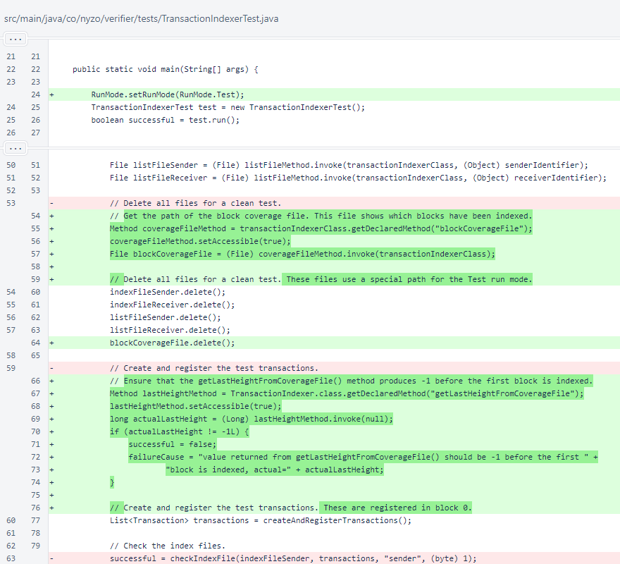The block coverage file is now tested, and all files are now deleted at the end of the test.
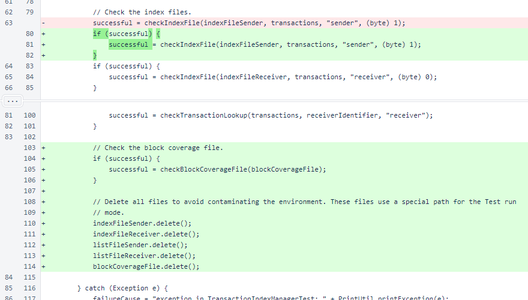The TransactionIndexerTest.checkBlockCoverageFile() method with a single argument creates an array of block heights to test the behavior of the coverage file. The purpose of each value in the array is noted in the comments.
The full coverage file is checked before the first height is added. An array is created to show the full expected file contents after the addition of each height to the file.
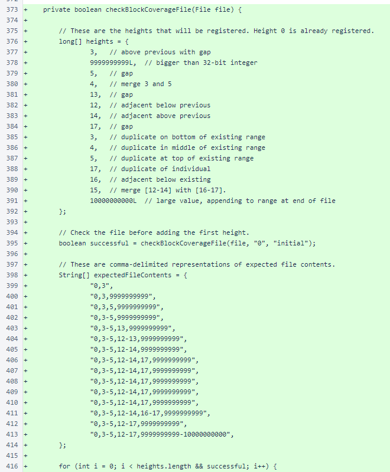An empty block is indexed for each height, and the coverage file is checked after each indexing operation.
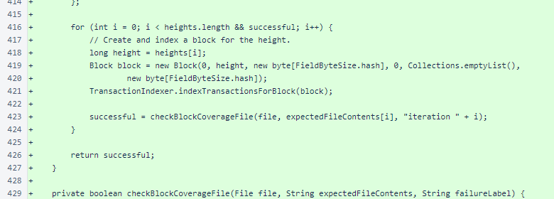The TransactionIndexerTest.checkBlockCoverageFile() overload with three arguments reads the file, checks every line against the expected value, and checks the value provided by the TransactionIndexer.getLastHeightFromCoverageFile() method.
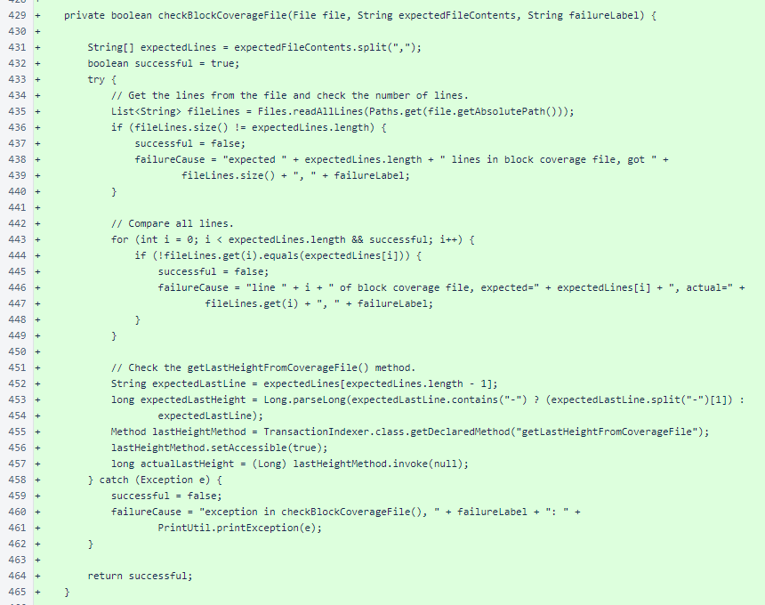